RoRo
I built RoRo, a wireless, battery-powered quadruped, in Professor Hod Lipson’s Robotics Studio (MECE E4611) in Columbia University’s Department of Mechanical Engineering in fall 2025.
The assignment was to build a working robot from scratch in one semester. The only hardware provided was LX-16 servos and a Raspberry Pi. I designed the chassis, legs, and servo brackets in Fusion 360, 3D printed and assembled them, and wrote the walking gait in Python.
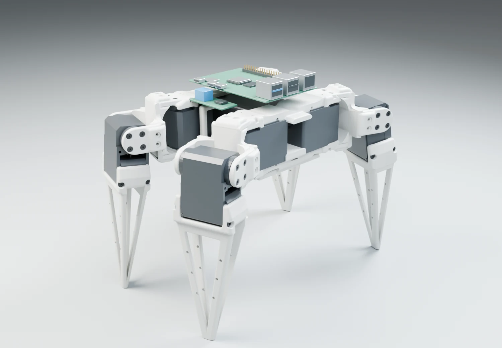
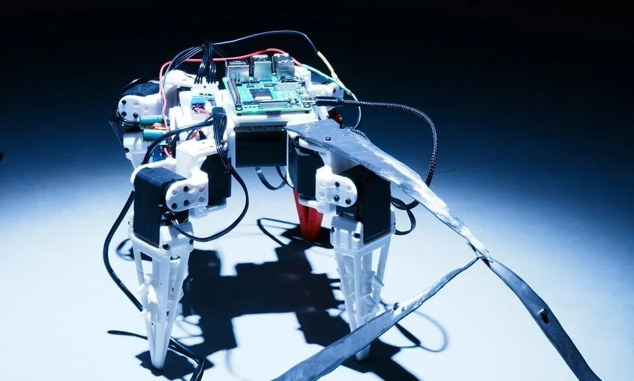
Design from scratch
Servo bracket
I designed the servo bracket in Fusion 360 to connect the hip and knee servos at right angles. The first version, reconstructed on the left, left too little room for the servo wheel to turn. The revised CAD on the right shows the circular recess I added for clearance.
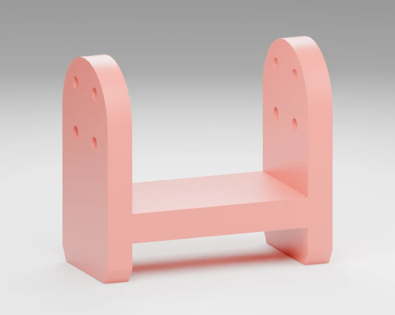
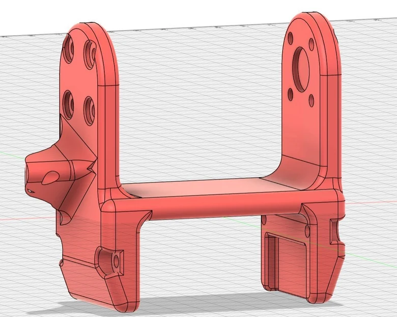
Leg assembly
I used a fixture to check the fit and range of motion on one leg before repeating the module at each corner.
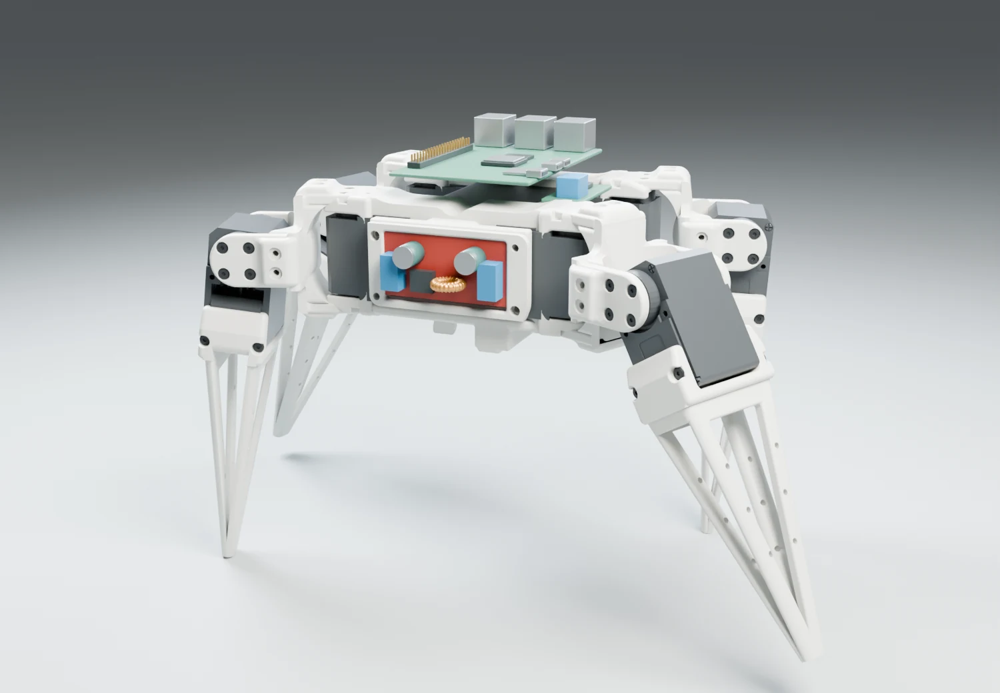
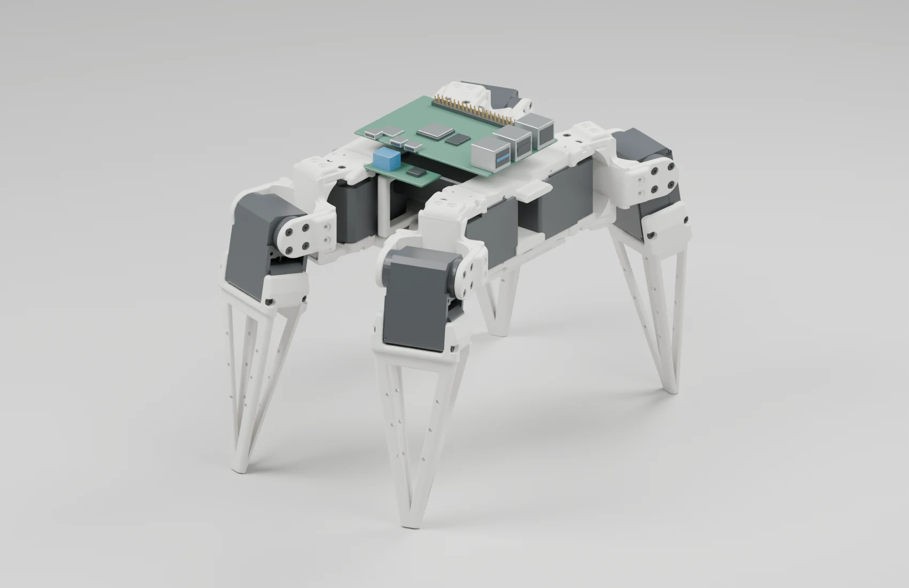
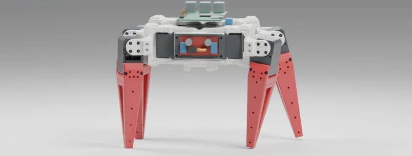
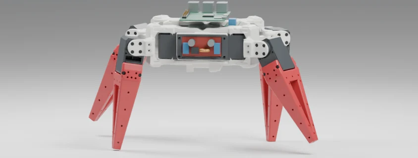
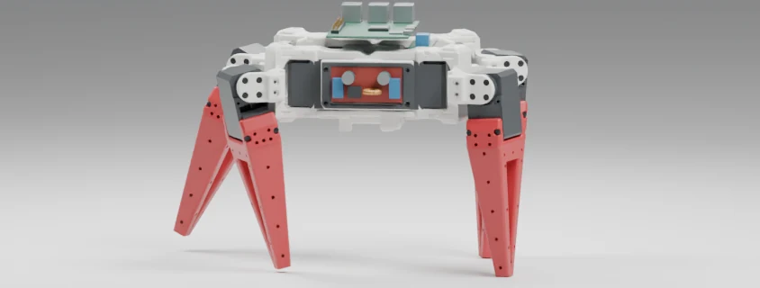
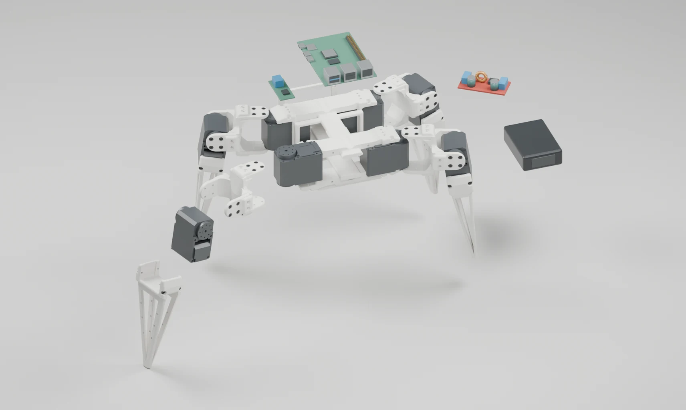
- Raspberry Pi at the top center
- DC–DC converter to the upper right
- Battery pack to the right
- Printed bracket at the separated hip joint
- Knee servo between the bracket and leg
- Printed leg at the lower left
- Raspberry Pi
- DC–DC converter
- Battery pack
- Printed bracket
- Knee servo
- Printed leg
Build process


Final outcome
Walking gait
The onboard battery and Raspberry Pi let RoRo walk wirelessly. On startup, the Python script polls each servo, flags timeouts by ID, and sends a short test move to the servos that respond. These three frames show how the prototype moves in the bench test.
-
Stance
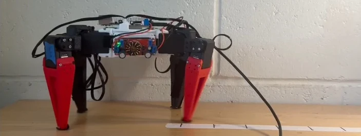
-
Front leg reaches
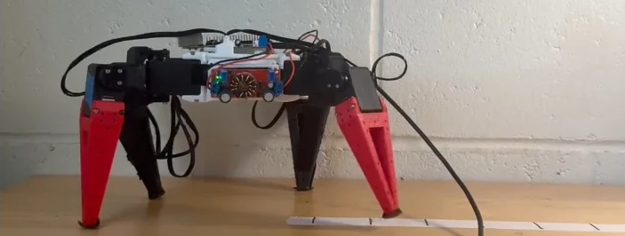
-
Rear leg follows
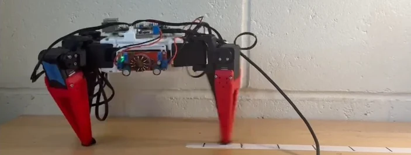
In the fastest run, I measured 13 cm of travel in 0.96 s using tape marks spaced 5 cm apart.
Mars documentary. At Movement Lab, I projected the surface of the Moon.